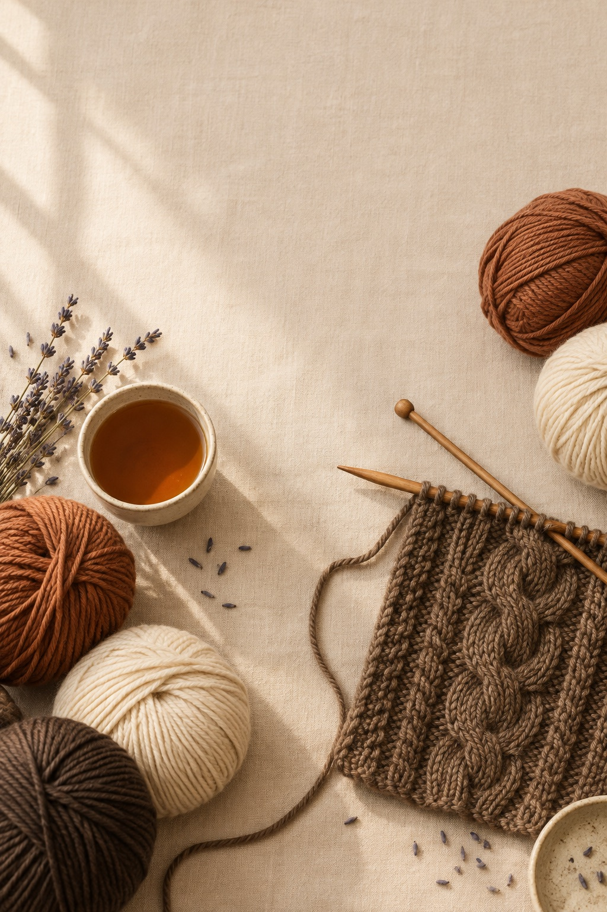

Biblioteca de Tipare
5.200+ Tipare Premium
Colecția completă organizată pe 12 categorii, toate nivelurile, toate ocaziile — tot ce ai nevoie ca să tricoți orice îți dorești.
Ghidurile Tale Bonus
12 ghiduri suplimentare incluse — deschide orice, oricând.
Marea Bibliotecă de Împletituri
Toate tehnicile — de la ochiuri simple la împletituri complexe, pas cu pas.
Deschide → Bonus 2Biblioteci Speciale
Tipare rapide, tipare vandabile și ce este trending — trei colecții curate.
Deschide → Bonus 3Ghidul Primelor Împletituri
Primele 10 tehnici esențiale, simplu explicate — perfect pentru a începe.
Deschide → Bonus 4Setul de Unelte al Tricotezei
Ce andrele să alegi și cum să îți organizezi colecția de lână.
Deschide → Bonus 5Tiparele Preferate
Top 50 tipare cele mai apreciate — cele mai tricotate și celebrate.
Deschide → Bonus 6Tipare pentru Animale
Hăinuțe și accesorii pentru câini și pisici — cadouri adorabile de weekend.
Deschide → Bonus 7Actualizări pe Viață
Cum să profiți la maximum de colecție și să descoperi tipare noi.
Deschide → Bonus 8Tipare de Croșetat
Colecție bonus pentru croșetat — dacă mai folosești și croșeta.
Deschide → Bonus 9Certificatul Tricotezei
Certificat personalizat de completare — o amintire frumoasă.
Deschide → Bonus 10Planul de Tricotat al Anului
52 de săptămâni de proiecte organizate pe sezon și dificultate.
Deschide → Bonus 11Lista de Cumpărături
Ce materiale și andrele să ai mereu acasă — lista completă.
Deschide → Bonus 12Ghidul de Cadouri Tricotate
Idei de cadouri pentru fiecare anotimp, cu tipare recomandate.
Deschide →De Unde să Începi
- Deschide Biblioteca de Tipare și alege prima categorie care te inspiră
- Alege un tipar la nivel Ușor sau Mediu pentru primul tău proiect
- Consultă Ghidul Primelor Împletituri dacă ai nevoie de ajutor cu o tehnică
- Folosește Lista de Cumpărături pentru a pregăti materialele necesare
Pentru uz personal. Redistribuirea sau revânzarea este interzisă.